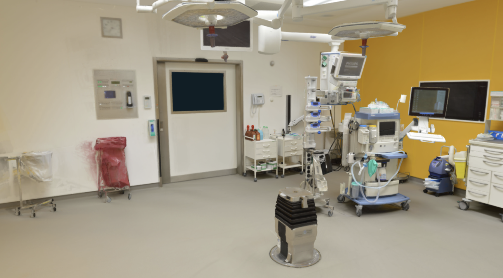

06 · Escenario
Representación visual del entorno de quirófano que servirá como base del ambiente virtual inmersivo: mesa de operaciones, lámparas cialíticas y equipamiento médico dispuesto para los protocolos preoperatorios.